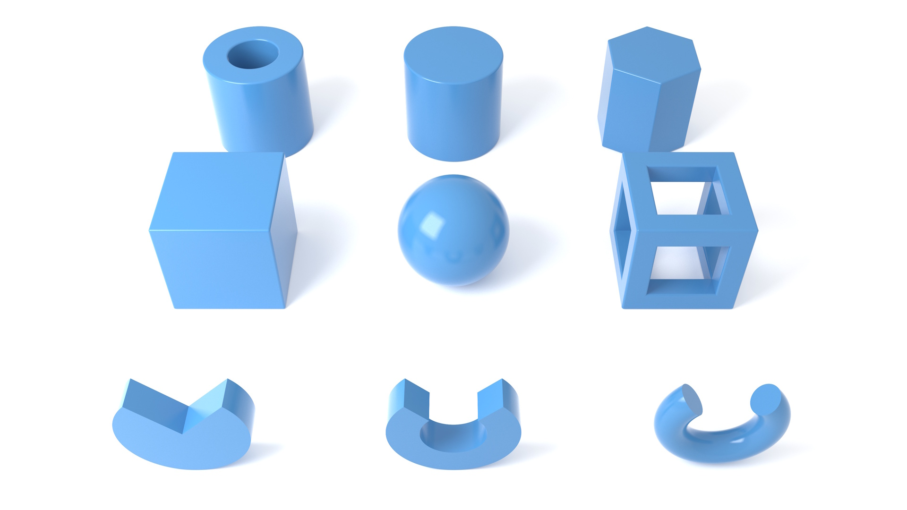

MorphCharts marks are rendered using geometric primitives. The geometry property determines
the shape used for the mark.

| Geometry | Description |
|---|---|
box |
Cuboid. Default for rect marks. |
sphere |
Sphere. Radius determined by width. |
cylinder |
Cylinder. Default for line and rule marks. |
hexprism |
Hexagonal prism. |
boxframe |
Open cuboid with thick edges. |
tube |
Hollow cylinder. |
ring |
Ring segment. Default for arc marks. |
torus |
Capped torus segment. Alternative for arc marks. |
xyrect |
Flat rectangle in the XY plane. |
xzrect |
Flat rectangle in the XZ plane (ground plane). |
yzrect |
Flat rectangle in the YZ plane. |
The rounding encoding property controls edge rounding radius.
Supported by box, cylinder, hexprism, boxframe,
and tube.
When rounding is specified on box or cylinder, the renderer
automatically uses the SDF variant for rounded edges.